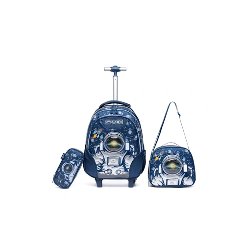

Descubra os Top 5 Kits de Mochilas de Rodinha para Estilo e Praticidade em 2025. Confira as melhores opções avaliadas para estudantes e profissionais.
O Que é uma Mochila de Rodinha?
Uma mochila de rodinha é um acessório funcional projetado para facilitar o transporte de materiais escolares, itens de viagem ou objetos de trabalho. Diferente das mochilas convencionais, ela é equipada com rodinhas em sua base e uma alça retrátil, permitindo que seja puxada com facilidade, semelhante ao funcionamento de uma mala de viagem.
Essa solução prática é ideal para pessoas que precisam transportar cargas mais pesadas frequentemente, como estudantes ou viajantes, pois reduz o esforço físico e protege as costas e ombros de sobrecarga. As mochilas de rodinha vêm em diversos tamanhos, estilos e materiais, tornando-as versáteis para atender diferentes públicos e finalidades.
Essas mochilas geralmente possuem compartimentos internos bem organizados e espaçosos, perfeitos para armazenar livros, cadernos, laptops, roupas e outros objetos essenciais. Muitos modelos incluem bolsos laterais para garrafas, alças acolchoadas ajustáveis para uso nas costas, além de designs atraentes que vão do divertido ao sofisticado.
Amplamente populares entre crianças por seus designs temáticos e coloridos, também conquistaram os adultos, com opções discretas e elegantes, ideais para viagens de negócios ou uso diário. A mochila de rodinha combina estilo, praticidade e conforto em um único produto.
Como Lavar Sua Mochila de Rodinha
Manter sua mochila de rodinha limpa é essencial para prolongar sua vida útil e preservar sua aparência. Veja como fazer isso de forma prática:
1. Leia a Etiqueta do Fabricante
Verifique as instruções de lavagem para garantir que os materiais sejam laváveis à mão ou em máquina.
2. Esvazie e Limpe Resíduos
Retire todos os itens dos compartimentos e sacuda a mochila para remover sujeiras soltas.
3. Limpe as Rodinhas e a Base
Use um pano úmido com sabão neutro para remover sujeira acumulada.
Para áreas difíceis, utilize uma escova macia.
4. Lave com Cuidado
Limpe o tecido com uma esponja e água com sabão suave.
Evite molhar a estrutura metálica ou partes internas.
5. Enxágue e Seque
Remova o excesso de sabão com um pano úmido e deixe secar à sombra, em local ventilado.
Seguindo esses passos, sua mochila estará limpa e pronta para o uso com segurança e praticidade!
Está difícil escolher entre tantas opções de kits de mochilas de rodinha no mercado? Este guia foi feito para você! Reunimos os 5 melhores kits escolares de 2025, combinando excelente custo-benefício, funcionalidade prática e designs estilosos. Nossa seleção é baseada em análises detalhadas, avaliações genuínas de consumidores, especificações técnicas e insights de fóruns e plataformas de compras. Descubra agora as opções mais recomendadas para atender às suas necessidades com qualidade e bom gosto!
Imagem: Mochila, autor Kaboompics.com, via Pexels.
1. Kit Mochila de Rodinhas Ferrazi

Imagem: Mochila de Rodinhas, Ferrazi.
Nota: 4.8 Estrelas | Preço Médio: R$ 359
O kit Mochila de Rodinhas Ferrazi é perfeito para quem busca funcionalidade, conforto e estilo. Com design moderno e detalhes encantadores em 3D, esta mochila é feita de poliéster de alta qualidade, oferecendo durabilidade e resistência.
Amplo espaço interno: 4 compartimentos organizados para livros, cadernos e pequenos objetos.
Rodinhas de gel siliconado: Estabilidade e suavidade no transporte.
Versatilidade: Alça retrátil com duas alturas (81 cm e 91 cm).
Lancheira térmica: Mantém os alimentos frescos, com espaço para garrafas.
Estojo compacto: Organiza lápis, canetas e outros itens essenciais.
Com uma garantia de 3 meses contra defeitos de fabricação, o conjunto Ferrazi tem mais de 90 avaliações positivas. Ideal para a volta às aulas com estilo e eficiência!
Se você procura uma mochila que combine durabilidade e charme, a Rebeca Bonbon é a escolha ideal. Confeccionada em jeans resistente, é uma excelente opção para meninas que desejam aliar estilo e praticidade.
Capacidade de 33 litros: Amplo espaço interno com compartimento especial para notebooks de até 15 polegadas.
Lancheira térmica: Feita em jeans com zíper reforçado, mantém lanches frescos com capacidade de 1,5 litros.
Estojo espaçoso: Armazena até 100 lápis com elásticos internos para organização.
Bem avaliada pelos consumidores, este kit é uma ótima escolha para quem quer unir funcionalidade e design moderno.
Para quem busca praticidade no dia a dia escolar, o Kit Espector combina um design casual com alta funcionalidade. Fabricada em poliéster resistente com detalhes em borracha, esta mochila se destaca pela durabilidade e espaço interno otimizado.
Amplo compartimento principal: Inclui divisória para livros e cadernos.
Lancheira térmica: Capacidade de 7 litros, ideal para transportar alimentos frescos.
Base reforçada e rodinhas resistentes: Oferecem estabilidade e conforto durante o transporte.
Disponível em cores modernas, o kit Espector é bem avaliado e perfeito para estudantes que precisam de praticidade e organização.
A mochila de rodinha Hang L combina estilo e funcionalidade com um design moderno e minimalista. Ideal para quem precisa de praticidade sem abrir mão do visual, ela oferece organização e durabilidade em um único produto.
Três compartimentos distintos: Perfeitos para organizar livros, cadernos e pequenos objetos.
Rodinhas de borracha e alça de alumínio: Mobilidade e resistência para o transporte.
Lancheira térmica: Capacidade de 4,8 litros, ideal para manter alimentos frescos durante o dia.
Leve e versátil, a Hang L é uma escolha acessível e bem avaliada, perfeita para estudantes de todas as idades.
Gostou das nossas comparações dos Top 5 Kits de Mochilas de Rodinha para Estilo e Praticidade em 2025?
Se você achou útil nossas dicas sobre os Top 5 Kits de Mochilas de Rodinha para Estilo e Praticidade em 2025 ou ainda tem dúvidas, ficaremos felizes em ouvir sua opinião. Há algo que não entendeu ou gostaria de sugerir melhorias? Convidamos você a participar da nossa sessão de comentários no blog do Comparativos X.

 5 Melhores Patinetes Infantis 3 Rodas 2024: Diversão e Segurança!
5 Melhores Patinetes Infantis 3 Rodas 2024: Diversão e Segurança! Bicicleta Infantil Aro 16 de 2024: O Início de Grandes Pedaladas
Bicicleta Infantil Aro 16 de 2024: O Início de Grandes Pedaladas Os 5 Melhores Tablets Infantis de 2024: Diversão para as Crianças
Os 5 Melhores Tablets Infantis de 2024: Diversão para as Crianças